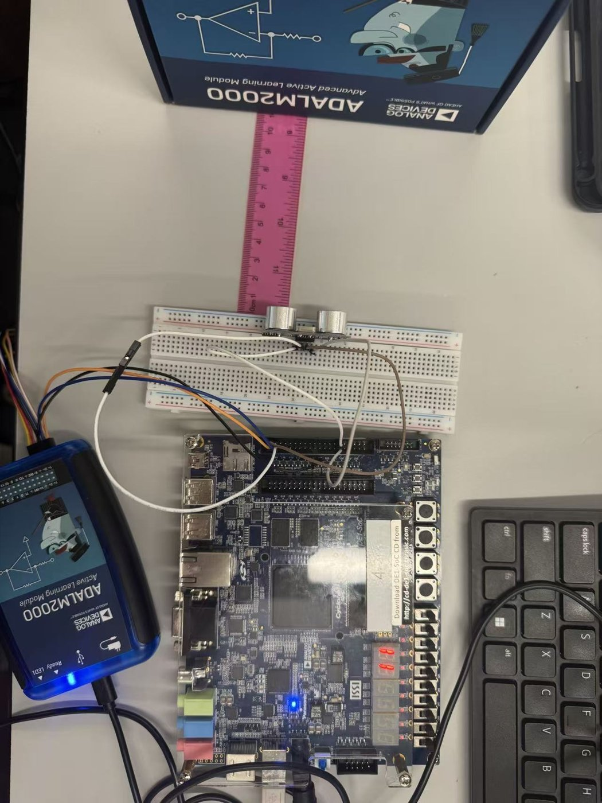
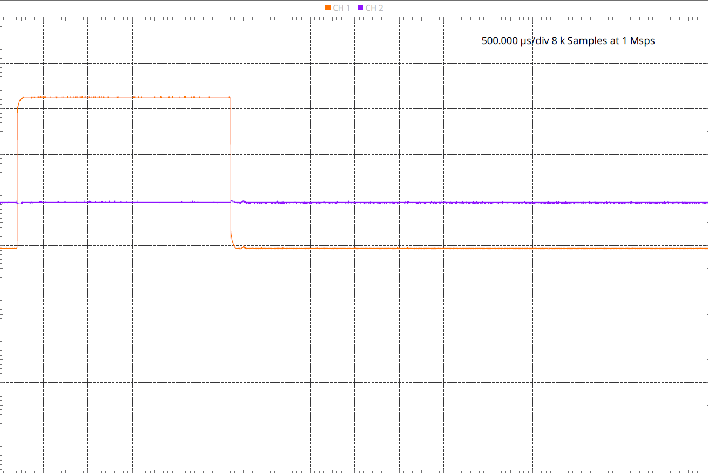

Overview项目概述
Built and characterized embedded hardware on the DE1-SoC platform, interfacing an ultrasonic distance sensor and a joystick-controlled RC servo motor with FPGA-driven PWM signals. Output timing was captured on the ADALM2000 to verify pulse widths corresponding to measured distances and commanded servo angles.在 DE1-SoC 平台上搭建并测试嵌入式硬件，用 FPGA 生成的 PWM 信号驱动超声波测距传感器和一个由摇杆控制的 RC 舵机。用 ADALM2000 捕获输出时序，验证脉冲宽度与所测距离及指令舵机角度相对应。
Gallery图库
Click any image to enlarge.点击任意图片可放大。

DE1-SoC board with joystick-controlled servo, fan, and sensor on breadboard, displaying live angle output.DE1-SoC 开发板，面包板上搭载摇杆控制的舵机、风扇和传感器，并实时显示角度输出。

Ultrasonic ranging setup on the DE1-SoC measuring an 11 cm target distance against a reference ruler.DE1-SoC 上的超声波测距装置，对照参考直尺测量 11 cm 的目标距离。

ADALM2000 oscilloscope capture of the 2.41 ms PWM pulse driving the servo to its 180-degree position.ADALM2000 示波器捕获的 2.41 ms PWM 脉冲，驱动舵机到 180 度位置。